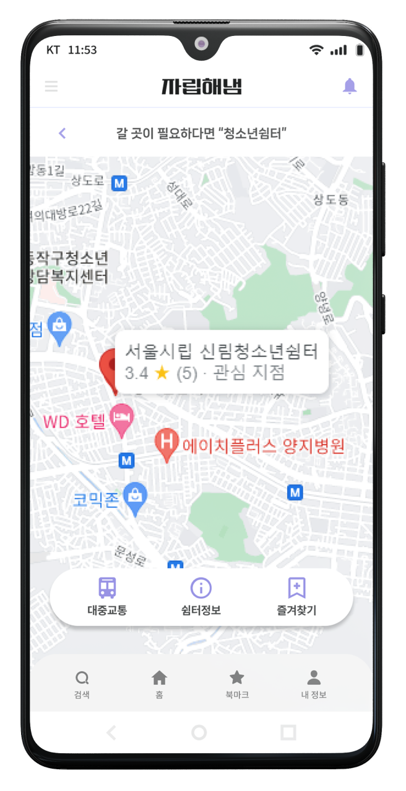
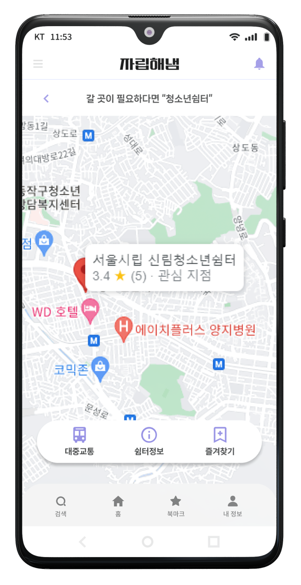

Application UI/UX redesign
사용자들이 편리하게 앱을 사용하기 위해 불편한 점을 찾고 보완, 수정했습니다.
자립해냄
기간 : 23.04.24 ~ 23.05.31
모바일 / 팀프로젝트 (이거왜안되조)
기간 : 23.04.24 ~ 23.05.31
모바일 / 팀프로젝트 (이거왜안되조)
가정 밖 청소년들의 자립을 돕고 정보를 제공하기 위하여 여성가족부와 한국청소년 상담복지개발원에서 개발한 모바일 앱. 2022.05 기준 3290명의 청소년이 사용 중.
1. 팀 결성 및 리더선정
2. 앱 선정 및 구조 분석
3. 정보구조도
4. 와이어프레임 + 워크플로우
5. 스타일가이드 제작
6. 프로토타입 제작
7. 프로젝트 완성 및 발표
사용자 편의를 고려해 기능을 추가하고 사용 중 불쾌함을 줄임
사용자가 앱을 어렵게 여기지 않도록 만듦
또렷한 주목성을 가지고 있으며 앱 내에서 다양한 공모전 등을 공지하고 참여를 격려하기 때문에 청소년들이 미디어 제작 활동에 즐거움과 소통을 실천하기 위한 서체의 의도와 선정한 앱의 성격이 일치해 사용하게 되었습니다.
그 외에는 부드러운 가독성과 눈을 지치게 하지 않은 단정한 형태를 고려하여 pretendard와 Nanumsquare을 사용, 내부 텍스트에 적용하였습니다.
중요도가 높은 카테고리를 위로, 스크롤을 추가해 레이아웃을 여유롭게 배치
페이지를 건너뛰고 바로가기를 사용함으로써 동작의 복잡함과 사용을 줄일 수 있습니다
유사 페이지 구분을 위해 일러스트 사용

 

상세보기에서 지도로 위치와 기관정보들을 쉽게 파악
눈여겨 본 기관을 즐겨찾기 등록하여 빠른 이용
카테고리를 나열해 페이지 이동을 줄임

지루함을 줄이고 공간의 여유를 주는 모션
기존 앱에서는 여러 카테고리 안으로 숨겨져 있던 긴급전화를
메인 홈의 서브 버튼으로 꺼내 위급한 상황 시 앱을 통하여
청소년이 즉각 도움을 요청할 수 있도록 디자인했습니다.